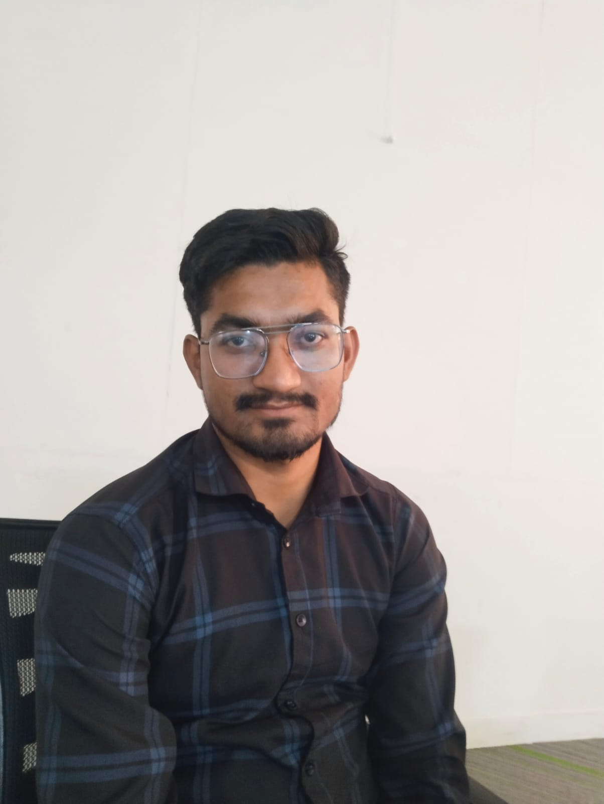
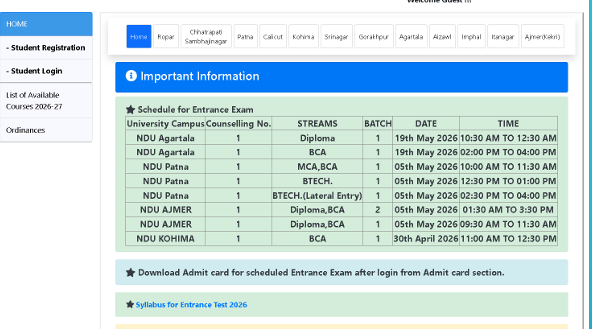
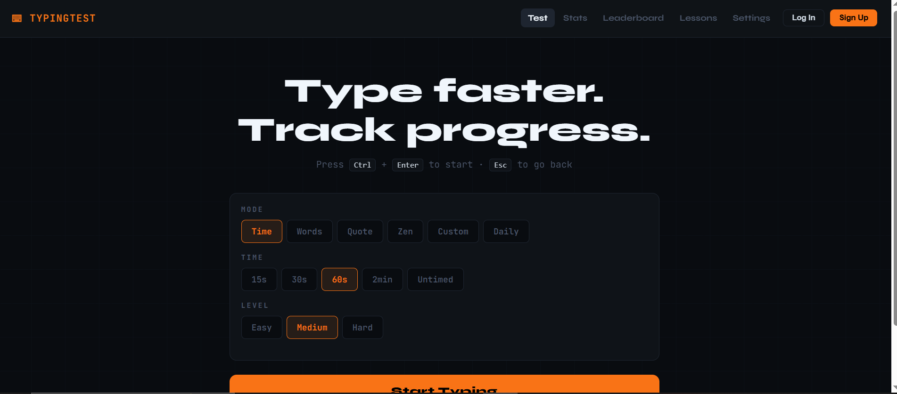
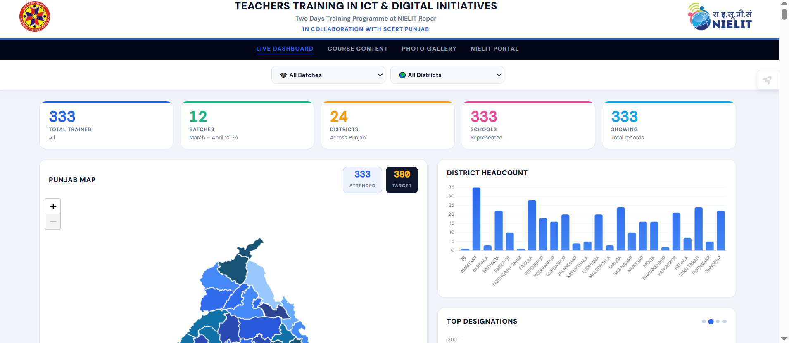
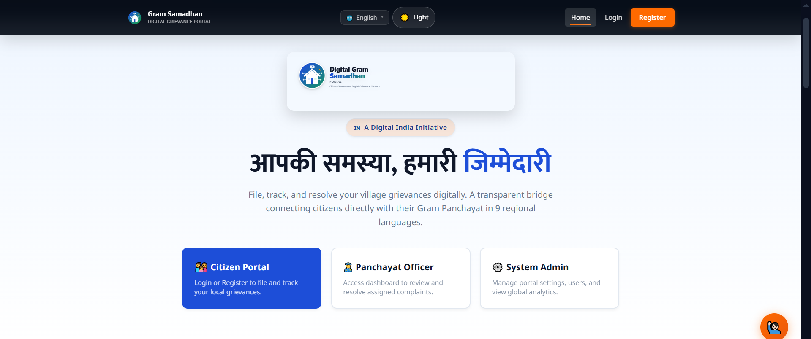
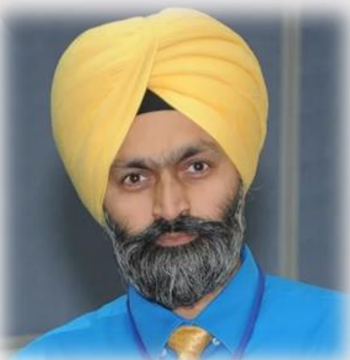

Muskan Daroch
AI/ML intern focused on Python, backend systems, data workflows, and production-minded tooling.
- ML / DL engineering
- Data curation and annotation
- Full-stack application work
Work Based Learning
MeitY Cohort 8 ShowcaseA polished showcase site for Cohort 8 inspired by the official WBL programme and the portfolio-style references you shared. It highlights the interns, mentors, learning domains, projects, and the live-learning spirit of the programme.

WBL works around internships, live projects, beneficiaries, and learning by doing.
Clean hero, strong stats, testimonial feel, and a people-first layout.
Designed for a public-facing intern cohort page that can grow as more assets arrive.
AI/ML intern focused on Python, backend systems, data workflows, and production-minded tooling.
Full stack and mobile builder working on AI-integrated web and app products with a civic-tech lens.

Python developer and backend builder focused on intelligent systems, ML pipelines, and useful web tools.

WBL member working across one of the cohort domains. Add portfolio and resume when available.
WBL member working across one of the cohort domains. Add photo, portfolio, and resume when available.
WBL member working across one of the cohort domains. Add photo, portfolio, and resume when available.
WBL member working across one of the cohort domains.
WBL member working across one of the cohort domains. Add photo, portfolio, and resume when available.
Models, datasets, automation, and intelligent systems.
Security awareness, risk reduction, and defensive tooling.
Connectivity, infrastructure, protocols, and system communication.
Digital fabrication, prototyping, and physical product iterations.
Immersive interfaces, simulation, and spatial experiences.
Hardware builds, circuits, embedded work, and device-level learning.
Each card captures a project, the core stack, and a short summary of what the team delivered.
A collaborative design canvas with multi-user support, live cursors, and shared workspace editing.

Admission portalAn admission and registration portal with status tracking, student support, and counselling updates.

Skill practice appA responsive typing trainer with speed tracking, instant results, and practice support for accuracy growth.
 Access control system
Access control system
QR-code based entry control platform for registrations, security scanning, visitor logging, and admin workflows.

Live dashboardA live tracking dashboard for district-level training data, maps, charts, batch analytics, and photo browsing.

Rural grievance platformA multilingual grievance platform designed for rural users with voice-first complaint registration and live status tracking.
Academics Dean and Training Head guiding the cohort through academic direction, structure, and learning quality.

Joint Director, Training Department, supporting the cohort with coordination, mentorship, and implementation focus.
“The best cohort page is one that shows real people, real work, and a clear path from learning to contribution.”
Design principle for Cohort 8